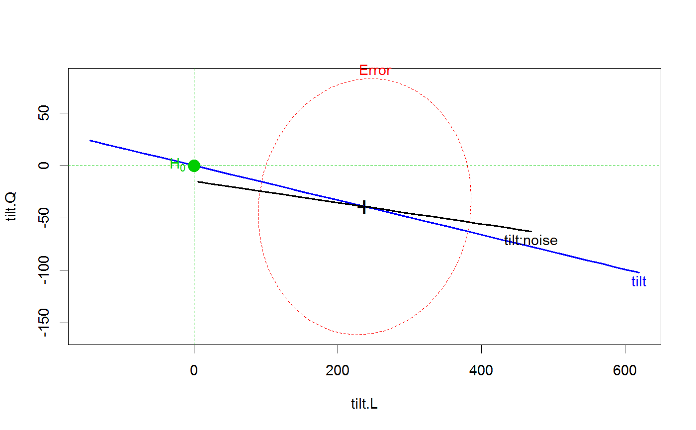

<!-- Generated by pkgdown: do not edit by hand -->
<!DOCTYPE html>
<html>
  <head>
  <meta charset="utf-8">
<meta http-equiv="X-UA-Compatible" content="IE=edge">
<meta name="viewport" content="width=device-width, initial-scale=1.0">

<title>Reaction Time Data — ReactTime • heplots</title>

<!-- jquery -->
<script src="https://code.jquery.com/jquery-3.1.0.min.js" integrity="sha384-nrOSfDHtoPMzJHjVTdCopGqIqeYETSXhZDFyniQ8ZHcVy08QesyHcnOUpMpqnmWq" crossorigin="anonymous"></script>
<!-- Bootstrap -->
<link href="https://maxcdn.bootstrapcdn.com/bootswatch/3.3.7/cerulean/bootstrap.min.css" rel="stylesheet" crossorigin="anonymous">

<script src="https://maxcdn.bootstrapcdn.com/bootstrap/3.3.7/js/bootstrap.min.js" integrity="sha384-Tc5IQib027qvyjSMfHjOMaLkfuWVxZxUPnCJA7l2mCWNIpG9mGCD8wGNIcPD7Txa" crossorigin="anonymous"></script>

<!-- Font Awesome icons -->
<link href="https://maxcdn.bootstrapcdn.com/font-awesome/4.6.3/css/font-awesome.min.css" rel="stylesheet" integrity="sha384-T8Gy5hrqNKT+hzMclPo118YTQO6cYprQmhrYwIiQ/3axmI1hQomh7Ud2hPOy8SP1" crossorigin="anonymous">


<!-- pkgdown -->
<link href="../pkgdown.css" rel="stylesheet">
<script src="../jquery.sticky-kit.min.js"></script>
<script src="../pkgdown.js"></script>
  
  
<!-- mathjax -->
<script src='https://mathjax.rstudio.com/latest/MathJax.js?config=TeX-AMS-MML_HTMLorMML'></script>

<!--[if lt IE 9]>
<script src="https://oss.maxcdn.com/html5shiv/3.7.3/html5shiv.min.js"></script>
<script src="https://oss.maxcdn.com/respond/1.4.2/respond.min.js"></script>
<![endif]-->


  </head>

  <body>
    <div class="container template-reference-topic">
      <header>
      <div class="navbar navbar-default navbar-fixed-top" role="navigation">
  <div class="container">
    <div class="navbar-header">
      <button type="button" class="navbar-toggle collapsed" data-toggle="collapse" data-target="#navbar">
        <span class="icon-bar"></span>
        <span class="icon-bar"></span>
        <span class="icon-bar"></span>
      </button>
      <a class="navbar-brand" href="../index.html">heplots</a>
    </div>
    <div id="navbar" class="navbar-collapse collapse">
      <ul class="nav navbar-nav">
        <li>
  <a href="../index.html">
    <span class="fa fa-home fa-lg"></span>
     
  </a>
</li>
<li>
  <a href="../reference/index.html">Reference</a>
</li>
      </ul>
      
      <ul class="nav navbar-nav navbar-right">
        
      </ul>
    </div><!--/.nav-collapse -->
  </div><!--/.container -->
</div><!--/.navbar -->

      
      </header>

      <div class="row">
  <div class="col-md-9 contents">
    <div class="page-header">
    <h1>Reaction Time Data</h1>
    </div>

    
    <p>Data from Maxwell and Delaney (1990, p. 497) representing the reaction times of 10 subjects
	in some task where visual stimuli are tilted at 0, 4, and 8 degrees; with noise absent or present. 
	Each subject responded to 3 tilt x 2 noise = 6 conditions.  The data thus comprise a
	repeated measure design with two within-S factors.</p>
    

    <pre class="usage"><span class='fu'>data</span>(<span class='no'>ReactTime</span>)</pre>
        
    <h2 class="hasAnchor" id="format"><a class="anchor" href="#format"></a>Format</h2>

    <p>A data frame with 10 observations giving the reaction time for the 6 conditions.</p><dl class='dl-horizontal'>
    <dt><code>deg0NA</code></dt><dd><p>a numeric vector</p></dd>
    <dt><code>deg4NA</code></dt><dd><p>a numeric vector</p></dd>
    <dt><code>deg8NA</code></dt><dd><p>a numeric vector</p></dd>
    <dt><code>deg0NP</code></dt><dd><p>a numeric vector</p></dd>
    <dt><code>deg4NP</code></dt><dd><p>a numeric vector</p></dd>
    <dt><code>deg8NP</code></dt><dd><p>a numeric vector</p></dd>
  </dl>
    
    <h2 class="hasAnchor" id="source"><a class="anchor" href="#source"></a>Source</h2>

    <p>Baron, J. and Li, Y. (2003).
 <em>Notes on the use of R for psychology experiments and questionnaires</em>,
 <a href='https://cran.r-project.org/doc/contrib/Baron-rpsych.pdf'>https://cran.r-project.org/doc/contrib/Baron-rpsych.pdf</a></p>
    
    <h2 class="hasAnchor" id="references"><a class="anchor" href="#references"></a>References</h2>

    <p>Michael Friendly (2010). HE Plots for Repeated Measures Designs. <em>Journal of Statistical Software</em>,
  37(4), 1-40. URL <a href='http://www.jstatsoft.org/v37/i04/'>http://www.jstatsoft.org/v37/i04/</a>.</p>
<p>Maxwell, S. E. &amp; Delaney, H. D. (1990). 
<em>Designing Experiments and Analyzing Data: A model comparison perspective</em>.
Pacific Grove, CA: Brooks/Cole.</p>
    

    <h2 class="hasAnchor" id="examples"><a class="anchor" href="#examples"></a>Examples</h2>
    <pre class="examples"><div class='input'><span class='fu'>data</span>(<span class='no'>ReactTime</span>)
(<span class='no'>RT.mod</span> <span class='kw'>&lt;-</span> <span class='fu'>lm</span>(<span class='fu'>as.matrix</span>(<span class='no'>ReactTime</span>)~<span class='fl'>1</span>))</div><div class='output co'>#&gt; 
#&gt; Call:
#&gt; lm(formula = as.matrix(ReactTime) ~ 1)
#&gt; 
#&gt; Coefficients:
#&gt;              deg0NA  deg4NA  deg8NA  deg0NP  deg4NP  deg8NP
#&gt; (Intercept)  462     510     528     492     660     762   
#&gt; </div><div class='input'>
<span class='co'># within-S factors</span>
<span class='no'>within</span> <span class='kw'>&lt;-</span> <span class='fu'>expand.grid</span>(<span class='kw'>tilt</span><span class='kw'>=</span><span class='fu'>ordered</span>(<span class='fu'>c</span>(<span class='fl'>0</span>,<span class='fl'>4</span>,<span class='fl'>8</span>)), <span class='kw'>noise</span><span class='kw'>=</span><span class='fu'>c</span>(<span class='st'>"NA"</span>, <span class='st'>"NP"</span>))
<span class='fu'>Anova</span>(<span class='no'>RT.mod</span>, <span class='kw'>idata</span><span class='kw'>=</span><span class='no'>within</span>, <span class='kw'>idesign</span><span class='kw'>=</span>~<span class='no'>tilt</span> * <span class='no'>noise</span>)</div><div class='output co'>#&gt; <span class='message'>Note: model has only an intercept; equivalent type-III tests substituted.</span></div><div class='output co'>#&gt; 
#&gt; Type III Repeated Measures MANOVA Tests: Pillai test statistic
#&gt;             Df test stat approx F num Df den Df    Pr(&gt;F)    
#&gt; (Intercept)  1   0.98518   598.45      1      9 1.527e-09 ***
#&gt; tilt         1   0.88760    31.59      2      8 0.0001596 ***
#&gt; noise        1   0.78955    33.77      1      9 0.0002560 ***
#&gt; tilt:noise   1   0.91822    44.91      2      8 4.472e-05 ***
#&gt; ---
#&gt; Signif. codes:  0 <U+0091>***<U+0092> 0.001 <U+0091>**<U+0092> 0.01 <U+0091>*<U+0092> 0.05 <U+0091>.<U+0092> 0.1 <U+0091> <U+0092> 1</div><div class='input'>
<span class='fu'><a href='heplot.html'>heplot</a></span>(<span class='no'>RT.mod</span>, <span class='kw'>idata</span><span class='kw'>=</span><span class='no'>within</span>, <span class='kw'>idesign</span><span class='kw'>=</span>~<span class='no'>tilt</span> * <span class='no'>noise</span>, <span class='kw'>iterm</span><span class='kw'>=</span><span class='st'>"tilt"</span>)</div><div class='output co'>#&gt; <span class='message'>Note: model has only an intercept; equivalent type-III tests substituted.</span></div><div class='img'></div><div class='input'>
<span class='co'># plotting means and std errors directly</span>

<span class='no'>levels</span> <span class='kw'>&lt;-</span> <span class='fu'>expand.grid</span>(<span class='kw'>Tilt</span><span class='kw'>=</span><span class='fu'>c</span>(<span class='fl'>0</span>,<span class='fl'>4</span>,<span class='fl'>8</span>), <span class='kw'>noise</span><span class='kw'>=</span><span class='fu'>c</span>(<span class='st'>"NA"</span>, <span class='st'>"NP"</span>))
(<span class='no'>means.df</span> <span class='kw'>&lt;-</span> <span class='fu'>data.frame</span>(<span class='no'>levels</span>, <span class='kw'>mean</span><span class='kw'>=</span><span class='fu'>colMeans</span>(<span class='no'>ReactTime</span>), <span class='kw'>se</span><span class='kw'>=</span><span class='fu'>sqrt</span>(<span class='fu'>diag</span>(<span class='fu'>var</span>(<span class='no'>ReactTime</span>)))/<span class='fl'>9</span>))</div><div class='output co'>#&gt;        Tilt noise mean        se
#&gt; deg0NA    0    NA  462  6.324555
#&gt; deg4NA    4    NA  510  9.558139
#&gt; deg8NA    8    NA  528  8.777075
#&gt; deg0NP    0    NP  492  9.838197
#&gt; deg4NP    4    NP  660 12.171612
#&gt; deg8NP    8    NP  762 12.976712</div><div class='input'>
<span class='fu'>with</span>(<span class='no'>means.df</span>, {
        <span class='fu'>plot</span>(<span class='no'>Tilt</span>, <span class='no'>mean</span>, <span class='kw'>type</span><span class='kw'>=</span><span class='st'>"n"</span>, <span class='kw'>main</span><span class='kw'>=</span><span class='st'>"Reaction Time data"</span>, <span class='kw'>xlab</span><span class='kw'>=</span><span class='st'>"Tilt"</span>, <span class='kw'>ylab</span><span class='kw'>=</span><span class='st'>"Reaction time"</span>)
        <span class='no'>colors</span> <span class='kw'>&lt;-</span> <span class='fu'>rep</span>(<span class='fu'>c</span>(<span class='st'>"red"</span>, <span class='st'>"blue"</span>), <span class='kw'>each</span><span class='kw'>=</span><span class='fl'>3</span>)
        <span class='no'>pts</span> <span class='kw'>&lt;-</span> <span class='fu'>rep</span>(<span class='fu'>c</span>(<span class='fl'>15</span>, <span class='fl'>16</span>), <span class='kw'>each</span><span class='kw'>=</span><span class='fl'>3</span>)

        <span class='fu'>lines</span>(<span class='no'>Tilt</span>[<span class='fl'>1</span>:<span class='fl'>3</span>], <span class='no'>mean</span>[<span class='fl'>1</span>:<span class='fl'>3</span>], <span class='kw'>col</span><span class='kw'>=</span><span class='st'>"red"</span>, <span class='kw'>lwd</span><span class='kw'>=</span><span class='fl'>2</span>)
        <span class='fu'>lines</span>(<span class='no'>Tilt</span>[<span class='fl'>4</span>:<span class='fl'>6</span>], <span class='no'>mean</span>[<span class='fl'>4</span>:<span class='fl'>6</span>], <span class='kw'>col</span><span class='kw'>=</span><span class='st'>"blue"</span>, <span class='kw'>lwd</span><span class='kw'>=</span><span class='fl'>2</span>)
        <span class='fu'>points</span>(<span class='no'>Tilt</span>, <span class='no'>mean</span>, <span class='kw'>pch</span><span class='kw'>=</span><span class='no'>pts</span>, <span class='kw'>col</span><span class='kw'>=</span><span class='no'>colors</span>, <span class='kw'>cex</span><span class='kw'>=</span><span class='fl'>1.2</span>)
        <span class='fu'>arrows</span>(<span class='no'>Tilt</span>, <span class='no'>mean</span>-<span class='no'>se</span>, <span class='no'>Tilt</span>, <span class='no'>mean</span>+<span class='no'>se</span>, <span class='kw'>angle</span><span class='kw'>=</span><span class='fl'>90</span>, <span class='kw'>code</span><span class='kw'>=</span><span class='fl'>3</span>,
                        <span class='kw'>col</span><span class='kw'>=</span><span class='no'>colors</span>, <span class='kw'>len</span><span class='kw'>=</span><span class='fl'>.05</span>, <span class='kw'>lwd</span><span class='kw'>=</span><span class='fl'>2</span>)
        <span class='co'># labels at last point, in lieu of legend</span>
        <span class='fu'>text</span>(<span class='no'>Tilt</span>[<span class='fl'>3</span>], <span class='no'>mean</span>[<span class='fl'>3</span>]-<span class='fl'>10</span>, <span class='kw'>labels</span><span class='kw'>=</span><span class='st'>"NA"</span>, <span class='kw'>col</span><span class='kw'>=</span><span class='st'>"red"</span>, <span class='kw'>pos</span><span class='kw'>=</span><span class='fl'>1</span>)
        <span class='fu'>text</span>(<span class='no'>Tilt</span>[<span class='fl'>6</span>], <span class='no'>mean</span>[<span class='fl'>6</span>]-<span class='fl'>10</span>, <span class='kw'>labels</span><span class='kw'>=</span><span class='st'>"NP"</span>, <span class='kw'>col</span><span class='kw'>=</span><span class='st'>"blue"</span>, <span class='kw'>pos</span><span class='kw'>=</span><span class='fl'>1</span>)
        }
        )</div><div class='img'></div></pre>
  </div>
  <div class="col-md-3 hidden-xs hidden-sm" id="sidebar">
    <h2>Contents</h2>
    <ul class="nav nav-pills nav-stacked">
      
      <li><a href="#format">Format</a></li>

      <li><a href="#source">Source</a></li>

      <li><a href="#references">References</a></li>
      
      <li><a href="#examples">Examples</a></li>
    </ul>

  </div>
</div>

      <footer>
      <div class="copyright">
  <p>Developed by John Fox, Michael Friendly.</p>
</div>

<div class="pkgdown">
  <p>Site built with <a href="http://hadley.github.io/pkgdown/">pkgdown</a>.</p>
</div>

      </footer>
   </div>

  </body>
</html>
